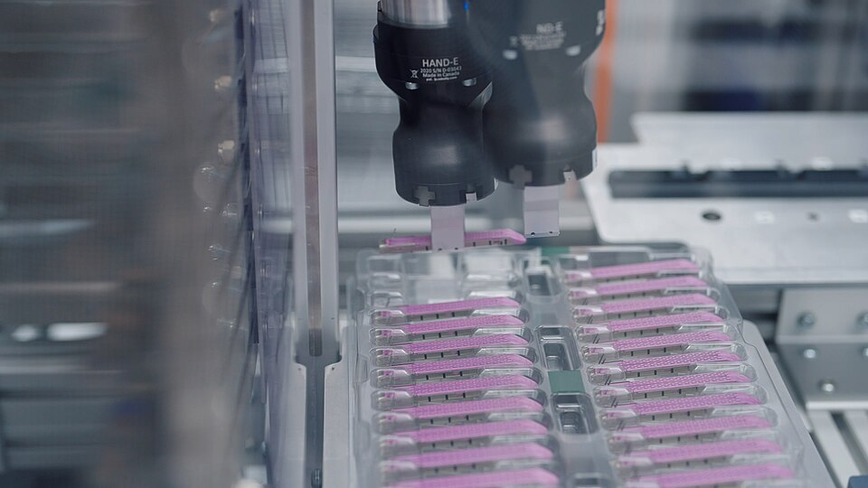

Robot stop functions, restart and validation evidence
A halted arm, a drive that cannot produce torque and a machine isolated for service describe different conditions. Read the function and evidence before drawing a conclusion.
Read the request, the intended state and its proof
| Function or action | Why it is used | Evidence to look for |
|---|---|---|
| Ordinary process stop | Pause or end production under normal control. | Sequencer and drive state, current part disposition, restart behaviour defined for the process. |
| Protective stop | Respond to a safeguard according to the application design. | Device acted, safety response occurred, and the required conditions were met before reset and restart. |
| Emergency stop | Allow a person to demand an emergency stopping response. | The response, latch and deliberate reset defined in the design. Routine access protection has its own safeguards. |
| Energy isolation for maintenance | Control energy sources before the work described in the isolation procedure. | Identified energy sources and verified isolation state, including stored or gravitational energy where relevant. |
Safe torque off (STO) prevents drive-generated motor torque according to the drive’s documented safety design. It can leave the drive electrically energised. A coasting axis can still move from inertia, gravity or external force. Safe stop 1 (SS1) is a documented safety function that initiates deceleration and transitions to STO according to its implementation. Brakes, gravity, tooling and retained parts need their own treatment in the application. Beckhoff · Example of a specific SS1 implementation.
Measure the whole response
A stop record needs a defined start event and a defined end state. A trigger-to-output delay measures only part of the chain. Include the sensing, decision, drive and physical stopping intervals in the measurement definition. Configuration, speed, load and direction all affect the observed response. If the training design states at most 450 ms and the observations are 410, 435 and 460 ms, the longest observation already fails. Use the same measurement boundary for each run and keep the instrument’s uncertainty.
Verification and validation evidence includes the applicable design, test setup, installed revision, representative modes and faults, observed outcomes, exceptions and sign-off from the responsible people. A PLC or ROS dashboard can show process state and still be the wrong source for evidence of an independent safety function. Use the test method required by the approved design. ISO 10218-2 · Industrial robot applications and cells · Safe Work Australia · Managing plant risks.
Make reset and restart visible
Test the sequence required by the application when an access condition clears. Acknowledging a stop, establishing readiness and authorising the next operation may be separate transitions. Draw the required transitions before looking at a trace. If the robot restarts when a guard closes or an alarm clears in a case requiring a distinct restart command, record that as a failure. Include a prior held command and power restoration among the planned acceptance cases.

Lexington Medical, Inc, scaled. Original · CC0.